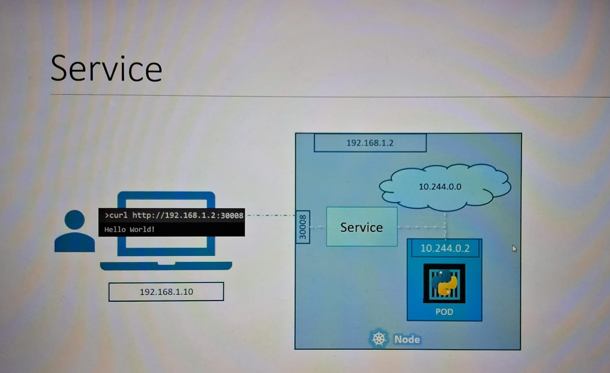
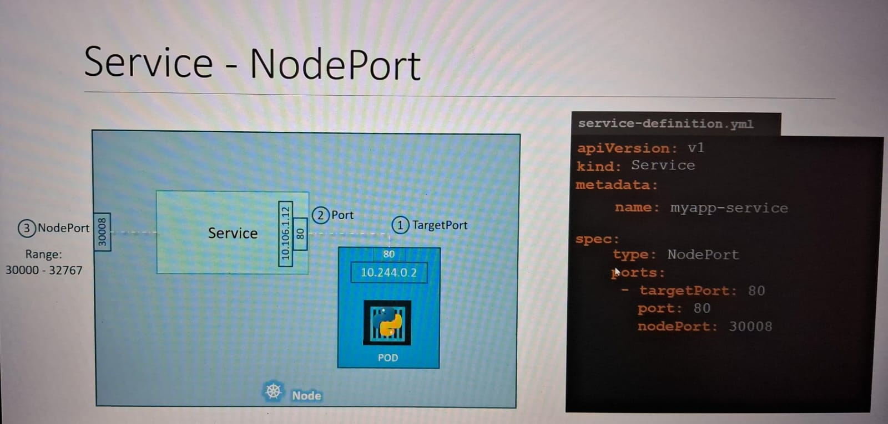
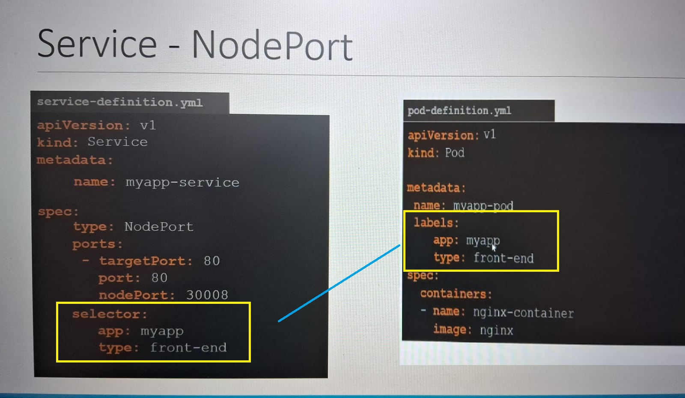
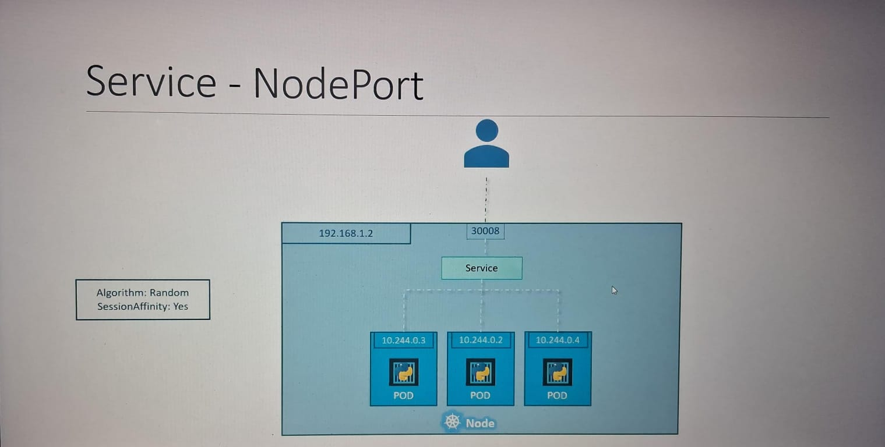
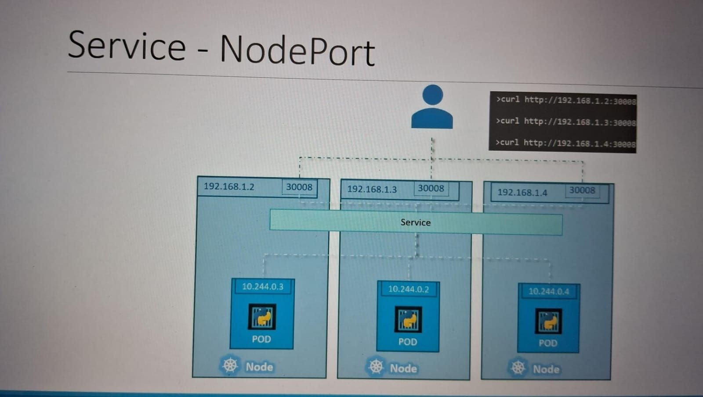

K8 services allow communication between and outside application..
Types of Services: Incoming connection to pod.
if suppose i have a node where pod is running and url is accessible through curl with in the pod.and i have my laptop on same sunbnet as node and i want to access the same url there,but the problem is server and laptop are in same subnet but pod is of different subnet.
So how the communication happens:
it will happen through nodePort service.
note: within node there is always a clusterIP by default so that pods can communicate each other.
so the set up will belike as below shown in image
We can see the yaml for nodePort service.
there are few things which are mandatory in nodeport service yaml , that is the port should be mandatory mentioned however if targetPort not mention it will take reference of port value. and nodeport is also not mandatory it can pickup with range from 30000-32767 port values.
now we have created the nodePort service but how will it communicate with pod.
we use label and selectors to make connection between services and pods as shown below
now the question arises that if there are multiple pods what will happen so the service will work according to label and selectors only and all the post ould have same label like "app: myapp" so the communication will done with all the pods with same labels with some random algorithm and session affinity.
Now again if the pods are distributed in different nodes , how the service will work , so it is feature of Kubernetes that once the service is created it will automatically communicate with all pods with in a cluster (creating kind of abstraction layer).
